Si cumples, subes
Cuando completas las repeticiones con el RIR previsto, calcula una subida proporcionada al ejercicio y cargable con tus discos.
App de fuerza e hipertrofia · Android
Las apps de registro guardan lo que haces. TrueLift decide lo que haces después: cuánto peso cargar en cada serie, cuándo mantener y cuándo frenar. Y te explica el porqué.
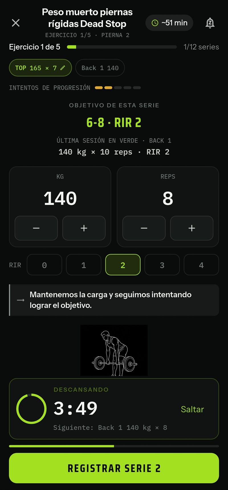
Por qué TrueLift
Cada vez que abres una sesión, TrueLift ya ha comparado tu última sesión con tu histórico y ha tomado la decisión por ti.
Cuando completas las repeticiones con el RIR previsto, calcula una subida proporcionada al ejercicio y cargable con tus discos.
Si faltan repeticiones o el esfuerzo se dispara, mantiene la carga para que consolides antes de volver a subir.
Tu sueño, estrés, molestias y VFC también cuentan: puede frenar subidas, bajar intensidad o proponer una descarga.
Sin IA improvisando: un algoritmo estable y explicable. Mismos datos, misma decisión, y siempre con el motivo a la vista.
Cómo funciona
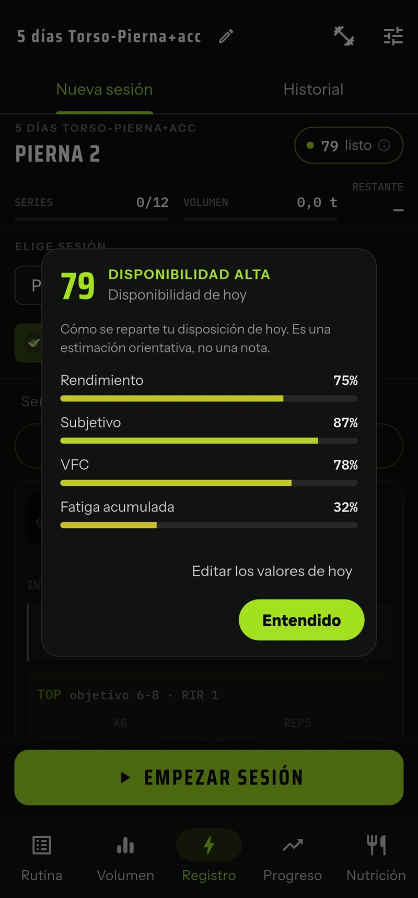
Rutina lista desde el primer día según tus días de entreno y tu nivel. Con PRO, un estado diario de 0 a 100 te dice cómo llegas.
Carga sugerida, objetivo de repeticiones y RIR, cronómetro de descanso. Tú solo confirmas lo que has hecho.
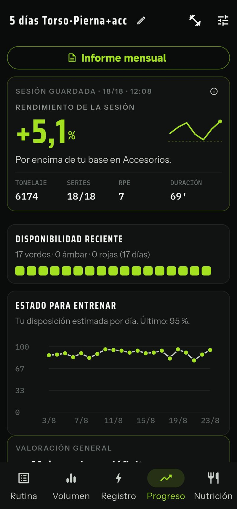
Rendimiento de la sesión frente a tu histórico y la carga ya programada para la próxima.
Progreso
Nada de gráficas de relleno. Cada dato responde a una pregunta concreta sobre tu entrenamiento.
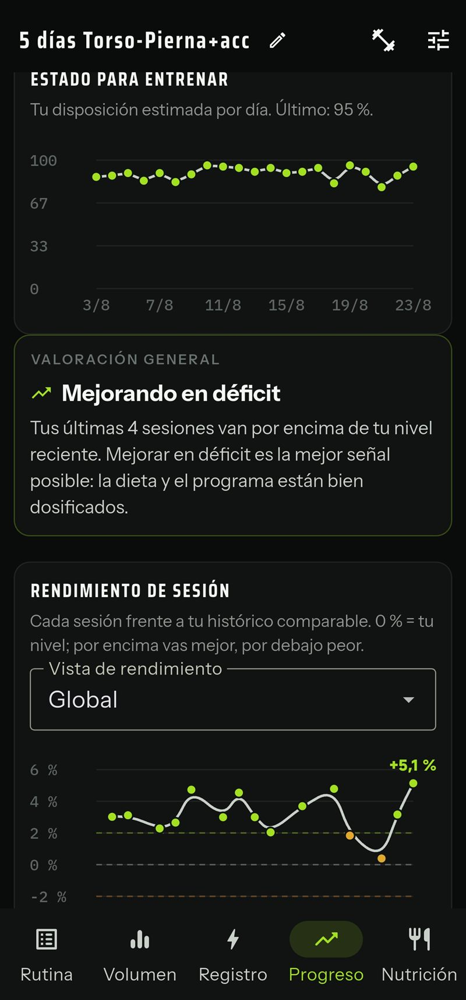
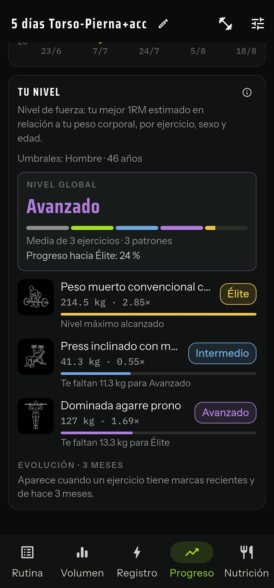
Gratis vs PRO
Todo lo necesario para entrenar en serio.
Todo lo de Gratis, más:
Al instalar tienes 28 días de PRO completo. Sin email, sin tarjeta, sin cargos automáticos. Si no eliges plan, sigues en la versión gratuita con tu historial intacto.
| Función | Gratis | PRO |
|---|---|---|
| Rutina prefijada y progresión automática | ||
| Registrar sesiones y cardio | ||
| Calculadora de discos, calentamiento y cronómetro | ||
| Volumen y frecuencia semanal | ||
| Progreso, marcas personales y rendimiento | ||
| Compartir entrenamiento e informe mensual | ||
| Copias de seguridad | ||
| Cambiar un ejercicio por otro | ||
| Configurar series, RIR, reps y descanso | ||
| Cambiar el patrón de un ejercicio y renombrar sesiones | ||
| Crear ejercicios e importar rutina desde Excel | ||
| Rutinas descargables: express, especialización, peso libre… | ||
| Autorregulación por sueño, estrés, molestias y VFC | ||
| Progresión ajustada a déficit, mantenimiento o superávit | ||
| Descarga guiada y descarga automática por fatiga | ||
| Plan de nutrición: temporada y ajuste semanal |
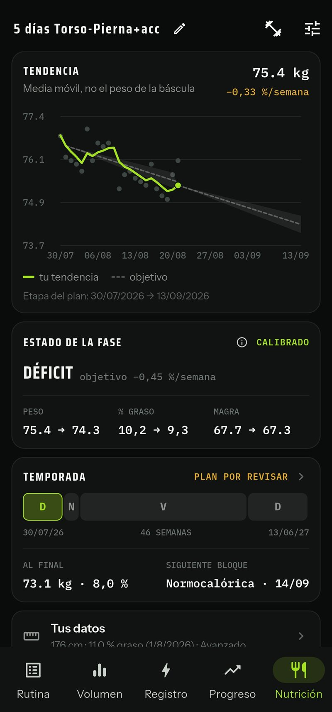
PRO Capa de nutrición · opcional
Defines tus bloques de volumen, mantenimiento y definición. Cada día anotas solo tu peso. Una vez por semana, la app compara tu ritmo real con el previsto y, si hace falta, te propone el ajuste en gramos de tus propios alimentos.
Ni banners, ni vídeos, ni rastreadores. Nada interrumpe tu entrenamiento.
Instala y entrena. No pedimos tu nombre, tu email ni nada de ti.
Tu rutina y tu historial se procesan en tu dispositivo y el desarrollador no puede consultarlos.
Capturas
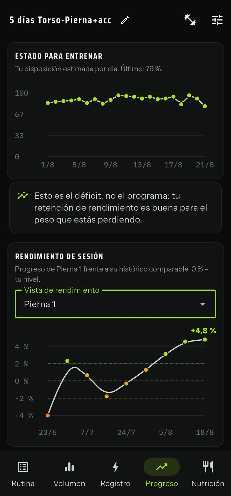
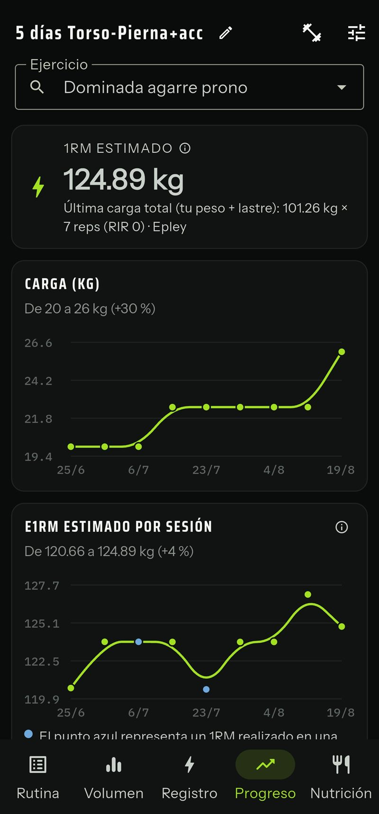
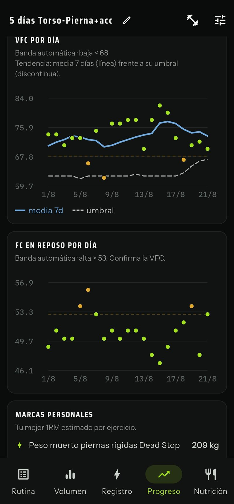
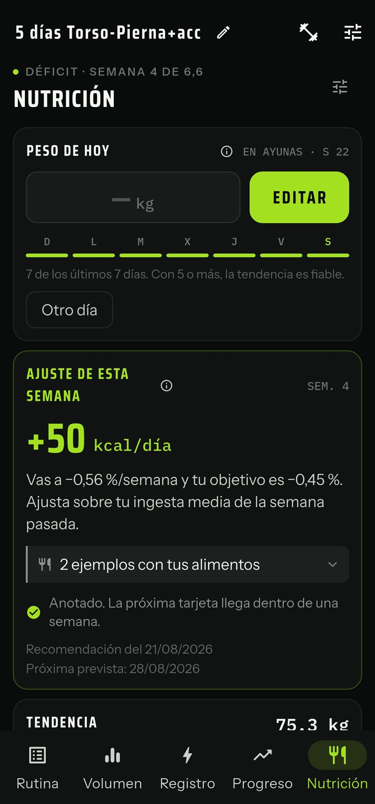
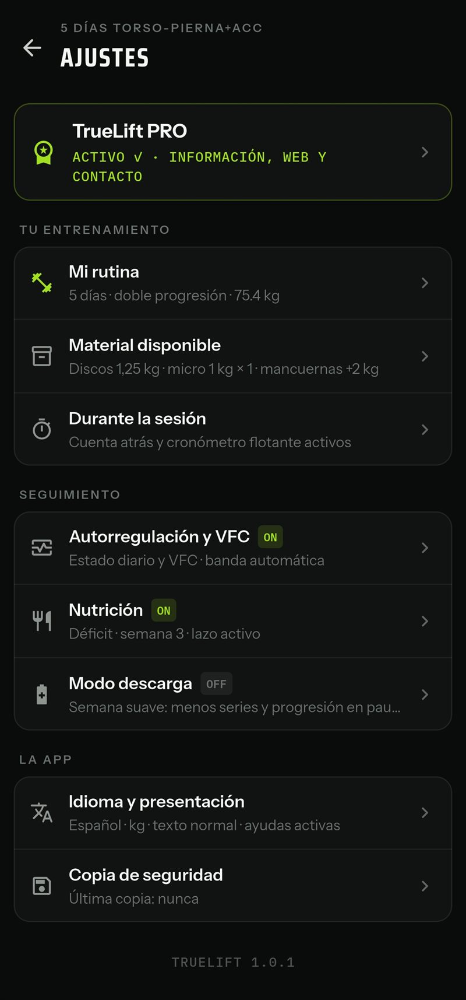
Preguntas frecuentes
Rutina prefijada según tus días de entreno, cambio de ejercicios, registro de sesiones y cardio, progresión automática, volumen semanal, progreso, marcas personales, informe mensual y copias de seguridad. No es una demo: puedes entrenar con ella para siempre.
Nada malo: la prueba no pide tarjeta ni genera cargos. Si no eliges ningún plan, sigues con la versión gratuita y tu rutina e historial intactos.
Como prefieras: suscripción mensual, suscripción anual o un pago único que desbloquea PRO para siempre. Las suscripciones no tienen permanencia. La compra queda asociada a tu cuenta de Google o Apple y puedes restaurarla si cambias de dispositivo.
No y no. TrueLift no muestra publicidad y no requiere registro. Tu historial se procesa en tu móvil y el desarrollador no puede consultarlo; los servicios de compra y descarga tratan solo los datos descritos en la política de privacidad.
No. La VFC (variabilidad de la frecuencia cardíaca) es una señal opcional que dan relojes y bandas de pulso y que suele avisar de la fatiga antes que el rendimiento. Si la mides, la app la integra con el resto de señales; si no, la autorregulación funciona con tu descanso, tu estrés, tus molestias y tu rendimiento reciente.
Las rutinas de la versión gratuita están orientadas a hipertrofia. En PRO puedes configurar series, repeticiones, RIR y descansos para priorizar fuerza si ese es tu objetivo.
Sí. Indicas el material que tienes y TrueLift propone cargas que realmente puedas montar con tus discos, microcargas y mancuernas.
Puedes descargar el manual de TrueLift en PDF con la explicación de todas las pantallas y funciones, gratuitas y PRO.

Gratis, sin anuncios y sin cuenta. Instala, abre la sesión que toca y deja que TrueLift decida la carga.
TrueLift Coach es la app web para seguir a tus atletas desde el escritorio, a partir del archivo que exportan desde la app.